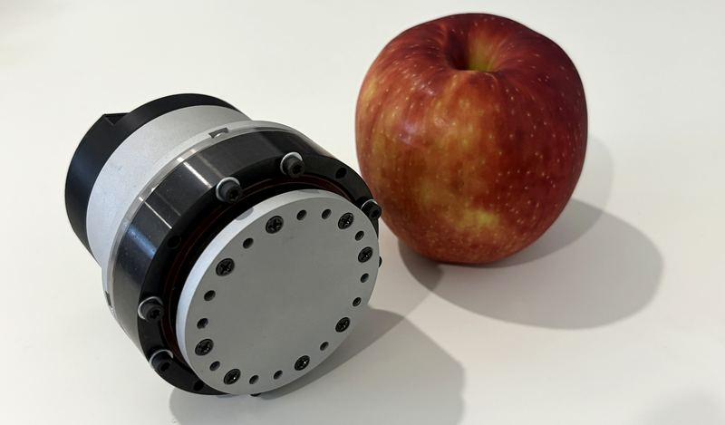
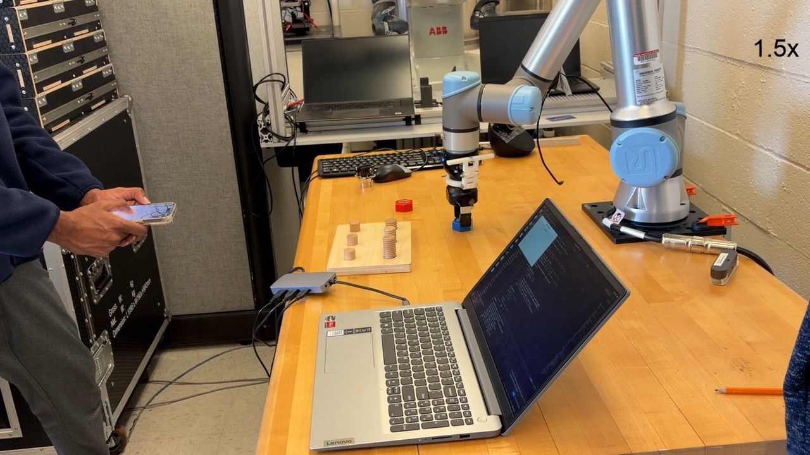
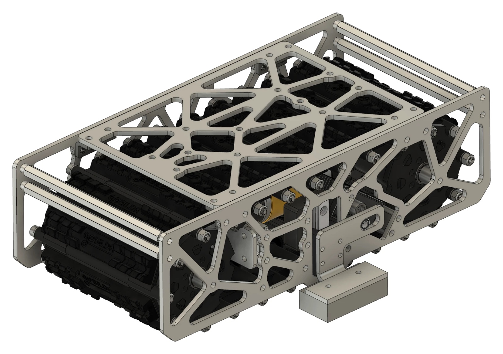

Projects
-

01
Harmonic Drive Actuator
A 50:1 strain wave actuator, ⌀80 mm × 78 mm, 991 g, characterized on the bench.
-

02
Teleoperation Framework
An iPhone's motion driving a UR5e arm, run with more than 100 users.
-

03
Humanoid High Traction Magnetic Feet
Treaded feet with servo-actuated magnets, so a Unitree R1 can climb steel inclines.
-

04
Octocanum Drivetrain
A mecanum drivetrain that deploys four traction wheels to switch to tank drive.